WELCOME TO TOA PAYOH SAFRA
TOA PAYOH SAFRA
One Stop Learning, Non-stop Fun
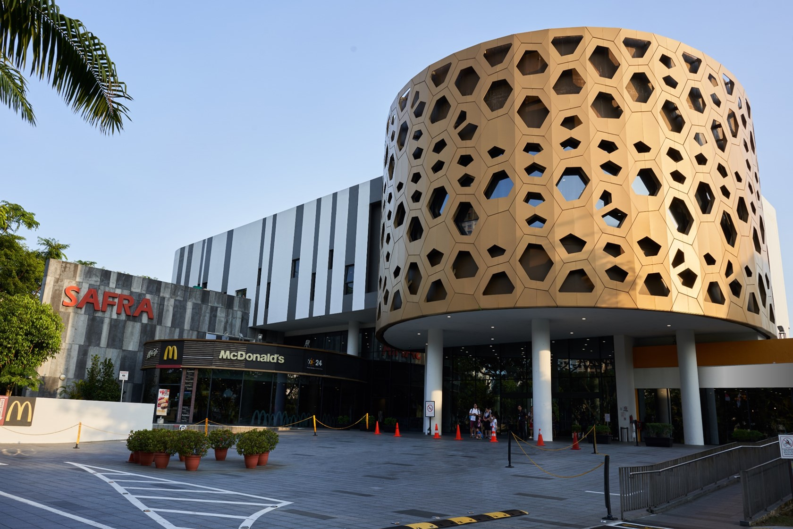
[Sports and Games] [Food & Beverages] [Contact Us]
ABOUT US
Discover a world of benefits in Food & Entertainment, Fitness & Adventure and Family & Enrichment at the newly refurbished SAFRA club in Toa Payoh. After a $52 million revamp completed in 2013, the club now boasts of a 24,000 sq m floor space that is three times larger than its original facility. We’re the go-to destination for all social, recreational, sports and educational facilities for NSmen and their families. Formed in 1972, SAFRA’s goal was to aid the Singapore Armed Forces (SAF) enhance camaraderie and boost morale among National Servicemen.
Today, there is a network of clubs located at Jurong, Mount Faber, Punggol, Tampines, Toa Payoh and Yishun. In addition to clubs, we offer a host of activities, value-added services and membership perks that meet the lifestyle needs of our community of more than 430,000 SAFRA members. Join us today!
SAFRA's Vision
Every SAF National Serviceman committed to Total Defence, strongly supported by
the community.
The SAFRA Mission
To strengthen bonds among SAF National Servicemen and to appreciate their
contributions to defence.
Past Events
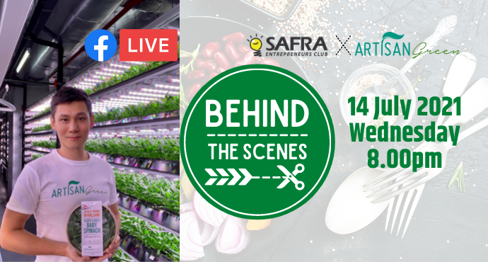
[Jul 2021] SAFRA Entrepreneurs' Club Behind the scenes series
[Mar 2021] SAFRA Entrepreneurs' Club Facebook Live Series on Sustainability
[Nov 2019] SAFRA Entrepreneurs' Marketplace
Sports and Games
Explore the variety of entertainment venues at Toa Payoh SAFRA! We are sure to have something that appeals to you!
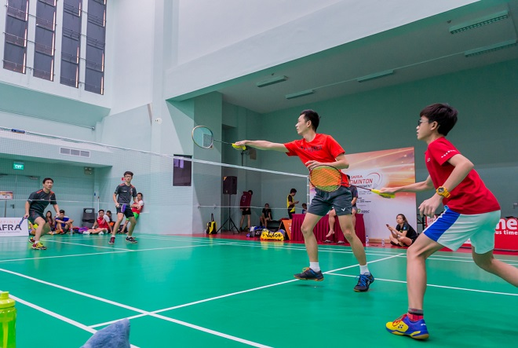
Indoor Badminton Court
Open daily: 7am to 1am (next day)
Call us: 6259 4000
A hall for all purpose!
Looking for some speed, agility and power? Sweat it out in a game of badminton. Book here.
Learn more
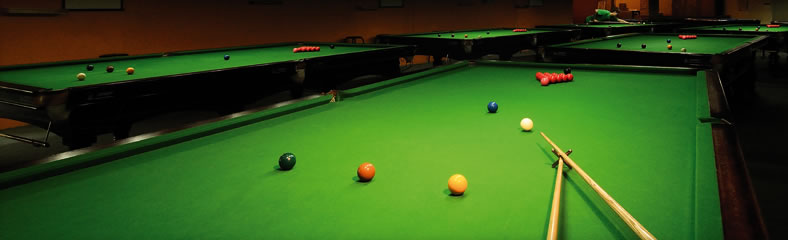
Lagoon Billiard Room
Open Mon to Sun, 10.00am to 6.00am
Call us: 6259 1019
Take your cue and put your hand-eye coordination and accuracy to the test in a game of billiards. This
new centre boasts 9 high standard international snooker tables and 8 American pool tables. We’re also
equipped to host tournaments in our tournament hall complete with seating gallery.
Learn more
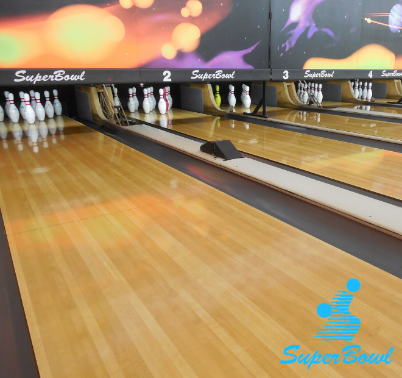
SuperBowl
Open Mon - Thu: 12pm - 12am
Fri & Eve of Public Holiday: 12pm - 1am
Sat: 10am - 1am
Sun & Public Holiday: 10am - 12am
Call us: 6253 3395
Strike your boredom away. At SuperBowl, we’ve got lanes of fun for everyone. Bowling not only builds
muscle strength and hand-eye coordination but is also easily picked up by all. SuperBowl also organises
events such as corporate tournaments, in-house leagues and birthday parties! Don’t know how to bowl
or want to skill up? Ask us about coaching too!
Learn more
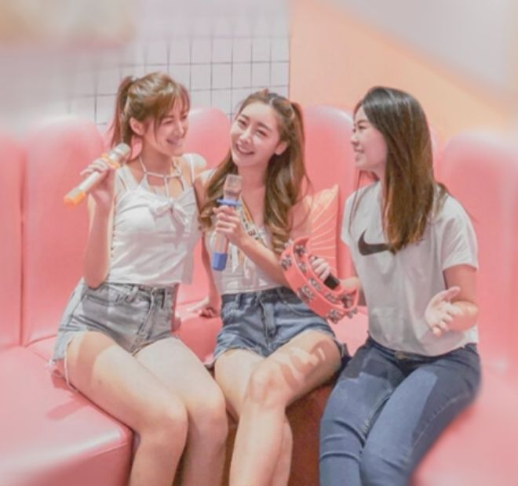
HaveFun Karaoke
Open Fri - Sun: 5pm to 2am (Next Day)
Call us: 6261 3565
Exercise your vocals and take your turn in the spotlight at HaveFun Karaoke, SAFRA Toa Payoh!
Ideal for after-work hangs and squad gatherings, HaveFun Karaoke boasts of private themed karaoke
suites and a comprehensive song collection of over 200,000 songs in different languages. It also offers
an expansive selection of delectable snacks and beverages to satisfy the hungry and thirsty. Engage in
other fun activities such as snooker and darts, for an unforgettable VIP Karaoke experience for every
reveller in the heartlands.
HaveFun Karaoke is a multifaceted entertainment zone suitable for all ages.
Play, sing and have fun!
Learn more
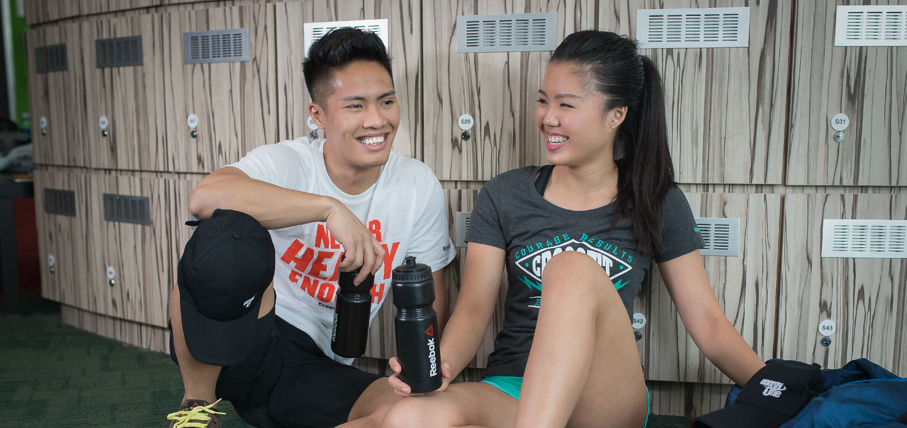
EnergyOne Gym
Open daily: 6.30am - 10.30pm (Next Day)
Call us: 6355 4560
Offering the best of resistance training equipment and cardio machines, EnergyOne Gyms also come
equipped with free weights, personal training and spacious changing rooms. What's more, SAFRA
members can cross train in other sports facilities located within our SAFRA clubs! Ask about fitness
assessments & consultations, and corporate services. Our personal training services are also highly
effective and our personal trainers are qualified fitness professionals who specialise in various areas,
such as weight management, injury rehabilitation, sports specifics and nutrition.
Find out more about our gyms here!
Learn more
Kidz Amaze
Open Monday to Friday 1:00pm – 7:00pm
Saturday amd Sunday: 11:00am – 7:00pm
Call us: 6355 4550
Treat your kids to one of Singapore’s largest indoor playground! Enjoy the wonder of play at one of
Singapore's largest indoor playground!
Learn more
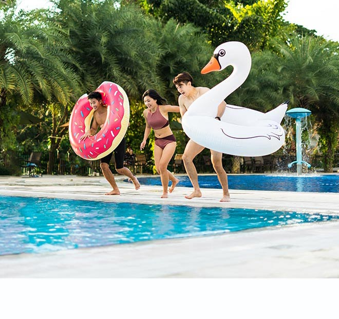
Swimming Pools
Open Mon - Tue, Thur - Fri: 7am - 9.30pm
Wed: 11am - 9.30pm
Sat - Sun, Public Holiday: 8am - 9.30am
Call us: 6259 4000
Have a splashing good time! Our swimming pools are highly popular with members and guests for
swimming laps, swimming classes or just chilling out in the sun or playing in our wading pools.
Learn more
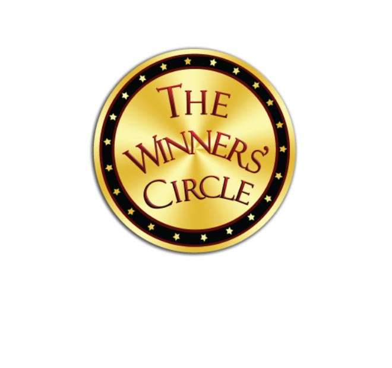
The Winners’ Circle
Open daily: 10am - 11pm
Call us: 6259 4000
Slot Machines Room at Toa Payoh SAFRA
You must be 21 years and above to enter The Winners’ Circle.
For those under 21 years, find out more here.
Learn more
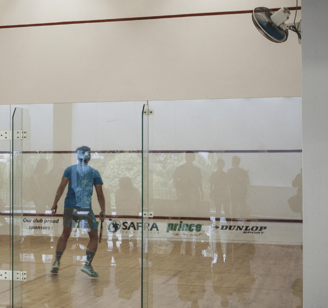
Indoor Squash Courts
Open daily: 7am - 1am (next day)
Call us: 6259 4000
An indoor court at Toa Payoh SAFRA for Squash!
Click here to book your court!
Learn more
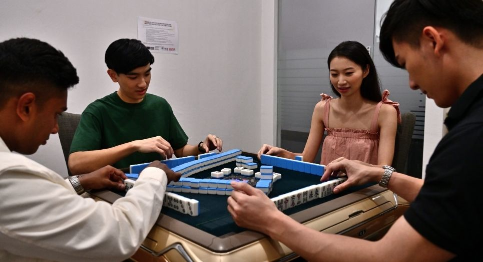
Games Room @ Toa Payoh
Open daily: 10am - 11pm
Call us: 6259 4000
What’s your game? Whether it’s mahjong, poker or blackjack, play with friends and family in the
comfort of our Games Room!
Click here for SAFRA Toa Payoh Games Room Rules.
Learn more
[Back to Top]
Food and Beverages
Explore the plethora of food available for you! You are sure to find something that satisfies your palate!
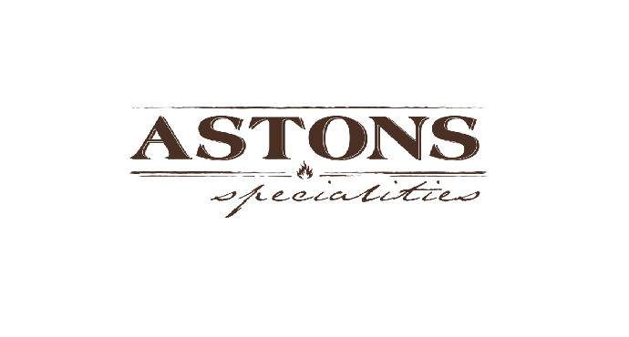
ASTONS Specialities
Open daily: 11.30am - 10.00pm
Call us: 6258 2937
ASTONS Specialities is a homegrown casual steakhouse renowned for its steaks and homely western cuisine, without the hefty price tags. Quality food coupled with a relaxing and cosy ambience is what comes to mind when you hear about ASTONS Specialities. Watch time slip away as you bask in good food with good company at our restaurants. Our main menu consists of steak, chicken, pork and seafood meals with most main courses served with two decadent side dishes of your choice, cold or hot.
Popular items include our legendary steaks charbroiled to your preferred doneness, grillwork chicken chops that come in a myriad of flavours including hickory barbecue and chargrilled style and super combo meals such as surf & turf.
Check the menu here!
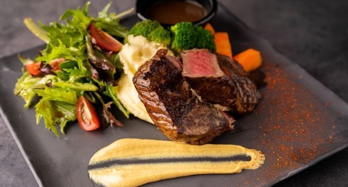
AXEsolute Bistro
Open daily: 11am-11pm
Call us: 8936 4353
A hearty and relaxing bistro which offers Italian fusion cuisine at an affordable price.
The menu features pan seared rib eye steak, grilled marinated chicken chop, chicken cutlet, pan seared
salmon fillet, chicken carbonara, seafood aglio olio, pizzas and a variety of finger food.
AXSolute Bistro also offers a wide range of beer and alcohol with amazing happy hour deals.
Check the menu here!
Jubilee Garden Restaurant
Open daily: 11:00am – 3:00pm, 5:30pm – 10:00pm (Till late for Banquet Services)
Call us: 6250 4477
Bringing you a new dining experience at Jubilee Garden Restaurant, a premium restaurant by Qian Xi Group.
Check the menu here!
 MacDonald's
MacDonald's
24 hours dine-in, drive-thru and McCafe®
Call us: 6259 1260
McDonald’s™ brings enjoyment to customers through our brand promise, “I’m lovin’ it”. With our restaurant environment, menu and innovations, we serve quality food at great value and fun for families and friends to bond over a meal at McDonald’s™.
Check the menu here!
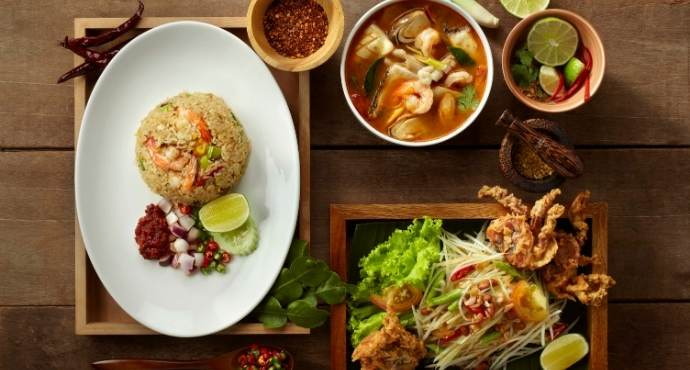
Siam Kitchen
Open Monday to Thursday: 11:30am – 3:00pm, 6:00pm – 10:00pm
Friday to Sunday, PH, eve of PH: 11:30am – 10:00pm
Call us: 6259 9106
Siam Kitchen is where old world charm meets new. Experience the best of authentic Thai cuisine right
in the comfort of our little red dot here at Siam Kitchen, now halal-certified.
Let our bona fide chefs from Thailand, handpicked for their ability to whip up delicious home-styled
Thai cuisine, thrill you with familiar favourites such as Red Tom Yum Soup, Chicken in Green Curry
and Fish Head in Tom Yum Curry.
At Siam Kitchen, fresh ingredients of the highest quality are used to accentuate the aromatic flavours of
Thai cooking. Siam Kitchen also weaves an ambience of Thai heritage along with its gracious
hospitality to create a warm and inviting dining experience for all.
Check the menu here!
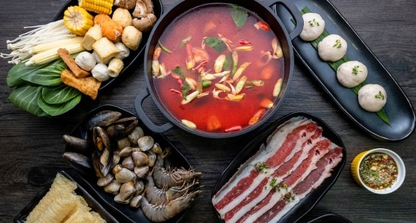
Suki-Suki Thai Hot Pot
Open Monday to Thursday: 11:30am – 3:00pm, 6:00pm – 10:00pm
Friday to Sunday, PH, eve of PH: 11:30am – 10:00pm
Call us: 6259 9106
Suki Suki Thai Hot Pot presents the multi-dimensional flavours of Thai cuisine through its spice-laden hot
pot fare. The Eat-All-You-Can buffet menu features quality ingredients like thinly sliced shabu-shabu beef
to home-made fish paste with over 40 different vegetables, mushrooms, and staples for its hot pot! Come
down now to this halal-certified restaurant and enjoy a satisfying meal!
Check the menu here!
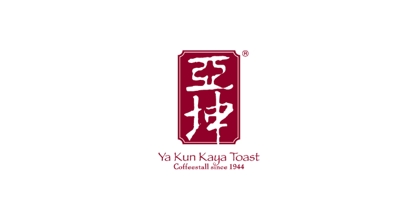
Ya Kun Kaya Toast
Open daily: 7:30am - 9:30pm, Last order at 9pm
Call us: 6261 5426
The name Ya Kun invariably conjures up images of freshly made kaya toast in the minds of Singaporeans. What is unique about Ya Kun is that it offers the same humble fare of eggs, coffee and toast made with its special proprietary kaya recipe, prepared exactly the same way as when it first started in 1944. With 75 years of history, Ya Kun is a household name well-loved by all. A place where generations of Singaporeans gather to chat and indulge in their favourite coffee, it’s also where you can get scrumptious traditional kaya toast served with soft-boiled eggs. It is certainly the place that captures the true meaning of ‘The Toast that binds.... Kinship, friendship, partnership’.
Check the menu here!
[Back to Top]
Contact Us
We'd be happy to hear from you, so please feel free to contact us using any of these methods!
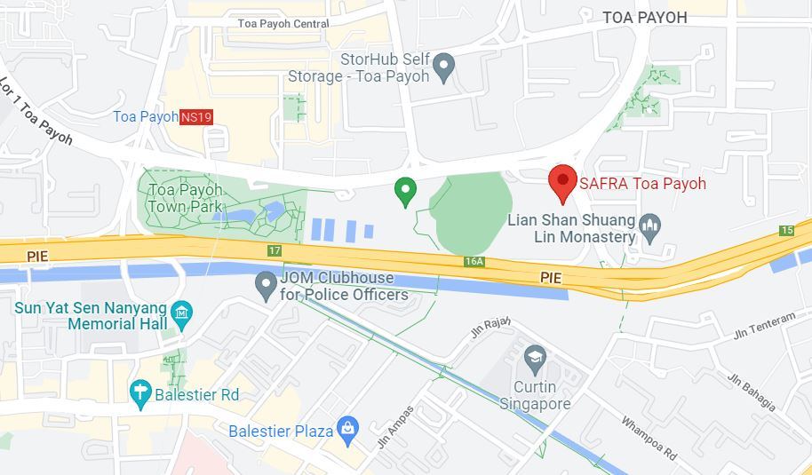
📍 293 Toa Payoh Lor 6 Singapore 319387
⏰ Daily 9:00a.m - 9:00p.m
✉ SAFRAtpy@gmail.com.sg
📞 62594000
Follow us: facebook Instagram Youtube
[Back to Top]